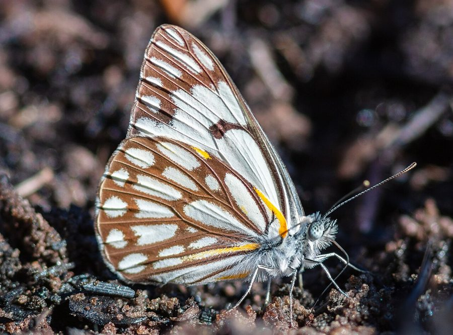

पायनियर तितलीPioneer
Belenois aurota · Pieridae · INS-0122

- Scientific name वैज्ञानिक नाम
- Belenois aurota (Fabricius, 1793)
- Family कुल
- Pieridae
- Hindi हिंदी
- पायनियर तितली
- Local names स्थानीय नाम
- pioneer, pioneer titli, caper white
- Status here यहाँ की स्थिति
- native
- Movement आवागमन
- Resident; numbers rise with migrants
- Known from कहाँ दर्ज
- Others have published records from the Basti–Ayodhya districts बस्ती–अयोध्या के ज़िलों से दूसरों के प्रकाशित अभिलेख
- IUCN IUCN
- not evaluated
- Review समीक्षा
- audited and independently read
When to look कब देखें
Present all year. साल भर मौजूद।
Shows seasonal fluctuations in population; moves with vegetation and breeding conditions; recorded as more abundant in monsoon months; source: Kunte (2000) All migrants and visitors →
Tell it apart from इनसे अलग पहचानें
पायनियर तितली / Pioneer
Belenois aurota (Fabricius, 1793) — Pieridae
पायनियर तितली — यह छोटी सफ़ेद तितली है जिसके पंखों की चोटी पर काला या नारंगी रंग होता है। इसके पंख साफ़ सफ़ेद होते हैं लेकिन आगे की ओर (forewing apex) पर गहरा धब्बा या नारंगी पैच होता है। यह तितली घास के मैदानों, खेतों और बंजर जगहों पर रहती है। अग्रदूत नाम इसलिए दिया गया है क्योंकि यह वर्षा ऋतु में सबसे पहली तितलियों में से एक है। इसकी इल्ली सरसों के पौधों पर पाई जाती है।
Quick Identification त्वरित पहचान
| Feature | Description |
|---|---|
| Wingspan | Small to medium; 45–58 mm |
| Ground color | Pure white |
| Forewing apex | Black with prominent white patch in the black apex (diagnostic) |
| Hindwing | White, unblemished |
| Underside | White, sometimes with faint yellow tint |
| Flight | Slow to moderate, fluttering flight |
Field tip: Look for a small white butterfly with a distinctive black forewing apex containing a white spot or patch. The contrast between the white wings and the dark apex makes this species easy to identify in the field.
हिंदी — कैसे पहचानें: सफ़ेद पंख, आगे की ओर काली चोटी जिसमें सफ़ेद दाग़ा हो।
Morphology आकारिकी
Biometrics:
| Measurement | Range |
|---|---|
| Adult wingspan | 45–58 mm |
| Body length | 16–20 mm |
| Forewing length | 20–26 mm |
| Caterpillar length (mature) | 20–24 mm |
Adult butterfly: Pure white or cream-white with a characteristically dark, almost black apex on the forewing, within which is set a conspicuous white patch. The hindwing is entirely white. Sexual dimorphism present with some individuals showing pale yellow tinges, particularly on the underside.
Caterpillar: Green, slender, with fine hairs, feeding on cruciferous host plants.
Behaviour & Ecology व्यवहार और पारिस्थितिकी
The Pioneer is a characteristic butterfly of open grassland and cultivated areas, particularly common during and immediately after the monsoon when Cruciferae host plants are abundant. The butterfly has a slow, fluttering flight and is often seen visiting low-growing wildflowers. Males are less territorial than some other pierids but do perch and wait for females. The species shows seasonal abundance patterns, increasing dramatically when host plant availability peaks.
Life Cycle / Phenology जीवन चक्र
| Stage / Season | Event |
|---|---|
| Egg | Laid on young host plant leaves; white; hatches in 3–5 days |
| Larva (caterpillar) | Green, smooth; passes through 4 instars; develops over 12–15 days |
| Pupa | Suspended chrysalis; white or pale; emerges in 7–10 days |
| Adult | Present year-round in eastern UP; peak emergence in June–September |
Host Plants or Prey आहार
Larval host plants (Cruciferae/Brassicaceae):
- Mustard species (Brassica spp.)
- Radish (Raphanus sativus)
- Turnip (Brassica rapa)
- Wild cruciferous weeds
Adult nectar sources:
- Small wildflowers and weeds in grassland and field margins
Predators / Natural Enemies शत्रु
- Dragonflies: Common predators of flying adults
- Spiders: Jumping spiders, garden spiders, and grass spiders
- Parasitoid wasps: Attack caterpillars and pupae
- Small birds: Feed on caterpillars and resting adults
Agricultural / Human Relevance कृषि प्रासंगिकता
Pollinator service. The Pioneer visits a variety of wildflowers and weeds, providing pollination services.
Crucifer association. The species is closely associated with Brassicaceae cultivation and wild relatives, with populations tracking the availability of host plants.
Expected Locally स्थानीय रूप से अपेक्षित
Not a field record. Written from published accounts for eastern Uttar Pradesh. No confirmed local sighting yet — if you have seen it, that is what the atlas needs.
अभी तक स्थानीय पुष्टि नहीं। यह विवरण प्रकाशित स्रोतों से है, किसी अवलोकन से नहीं।
The species is expected year-round throughout Basti district, with peak abundance from June to September when Brassica and related plants are growing. Look for it in grasslands, field margins, and vegetable gardens. The distinctive white coloring with black apex makes it identifiable. A photograph with date and location would confirm a local record.
Distribution वितरण
Global range: Africa and tropical Asia from India through Southeast Asia.
In India: Distributed throughout the subcontinent from plains to foothills.
In Uttar Pradesh: Present in agricultural and grassland areas throughout the state.
In Basti district / eastern UP: Expected year-round in open habitats, particularly common in monsoon months.
Research Questions शोध प्रश्न
Anyone can investigate these | कोई भी इन प्रश्नों की जाँच कर सकता है
- Which Brassica crop variety attracts the most Pioneer butterflies in Basti? / बस्ती में किस सरसों की किस्म पर सब से ज़्यादा अग्रदूत तितलियाँ आती हैं? — Monitor eggs and larvae on different varieties.
- How many generations of Pioneer butterflies occur during the mustard-growing season in Basti? — Track emergence dates from October to March.
- Do Pioneer butterflies prefer newly planted or mature Brassica crops? — Compare visitation rates and egg-laying on different crop stages.
- What percentage of caterpillars are parasitized by wasps on different Brassica crops? — Collect and rear caterpillars; record parasitoid emergence.
- How far do Pioneer butterflies disperse from their breeding habitat? — Mark and recapture individuals.
Similar Species मिलती-जुलती प्रजातियाँ
| Species | How to tell apart | हिंदी | |
|---|---|---|---|
| [[common_emigrant\ | Common Emigrant]] (Catopsilia pomona) | Larger; more yellow coloration; hindwing yellow-tinged | सामान्य प्रवासी — बड़ा, पीला-पहलू |
| [[common_wanderer\ | Common Wanderer]] (Pareronia anais) | Brown and white coloration; lacks the diagnostic black apex with white patch | कॉमन वॉन्डरर — भूरे और सफ़ेद रंग |
Field rule: A small pure white butterfly with a bold black apex containing a white patch on the forewing, flying over grassland or Brassica fields, is the Pioneer.
Taxonomy & Classification वर्गीकरण
Original description. Described by Fabricius in 1793 from East Indian specimens. The genus Belenois comprises African and Asian white butterflies with characteristic apex patterns.
Subspecies. The nominate subspecies B. a. aurota occurs throughout South Asia and Southeast Asia.
Family and order placement. Order Lepidoptera, family Pieridae (whites and yellows).
Phylogenetic notes. Belenois is an African-origin genus with several species occurring in Asia, characterized by the distinctive dark apex on white wings.
IUCN status rationale. Not evaluated. Common and widespread with seasonal fluctuations in abundance.
Photo Gallery फोटो गैलरी
No photos yet — add field photos to media/species/pioneer/ and run node scripts/sync_photos.js.
Photos needed आवश्यक फोटो
- [ ] Adult on mustard plant (सरसों पर)
- [ ] Wings showing black apex with white patch (पंख खुले, काली चोटी)
- [ ] Caterpillar on host plant (इल्ली)
References संदर्भ
- Fabricius, J.C. (1793). Entomologia Systematica, vol. 3. Copenhagen. [original description]
- Bingham, C.T. (1905). The Fauna of British India, including Ceylon and Burma. Butterflies. Vol. 1. Taylor & Francis, London.
- Kehimkar, I. (2008). The Book of Indian Butterflies. Bombay Natural History Society, Mumbai.
- Kunte, K. (2000). Butterflies of Peninsular India. Universities Press, Hyderabad.
- Zoological Survey of India (2010). Fauna of Eastern Uttar Pradesh.
- GBIF Occurrence Data — Belenois aurota, India (2010–2025).
Source file: species/fauna/insects/pioneer.md